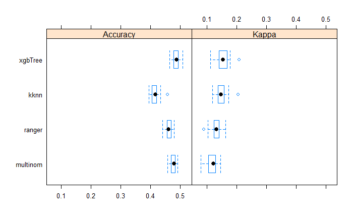

Machine Learning for Remote Sensing

Introduction
Machine learning (ML) is currently a buzzword in urban analytics. It is a process of automated model building that generates a predictive model that can reasonably explain not just the data that it is trained on, but generalised to other data from the same data generating process. Traditional models are rules that operate on data to produce and output. Machine learning approaches, on the other hand, usually take outputs and data to figure out the appropriate rules. While traditional models have to rely upon external justification for the rules, the promise of ML is that it discovers these rules empirically, without a theoretical basis for understanding the correlations among the different variables.One important thing to note about machine learning is that the models are restricted to the hypothesis space and the search is not among the arbitrary model specifications. For example, in machine learning, that is about logistic regression model, the features are restricted to enter the model in a linear fashion, where as in a decision tree, they behave non-linearly based on the partition. While this may be too esoteric for students who are starting out on understanding ML techniques, it is useful to temper the expectations regarding what kinds of models can we expect to be generated by the various algorithms. In other words, there is no guarantee that the ML model is the best model that explains and predicts the observed data. Practical ML is as much an art as it is a science.
It might be beneficial to illustrate some of the salient points about ML though a practical example that interests planners. Identifying objects and land use classes from remotely sensed images of urban areas.
Stages of ML approach
There are 5 distinct stages of Machine Learning. Let’s focus on supervised learning, a subset of ML approaches. In supervised learning, target outcome is known for a vector of features and the dataset consists of a collection of the features and target. So for example, land use class is frequently the target (dependent variable) and the features (independent variables) are various bands, indices, textures, proximity etc.
Identifying appropriate data sources, especially labelled data. Wrangle, Clean and Assemble (Data Preprocessing)
Feature Engineering. Identify the right variable combinations from the independent variables.
Splitting the data into training, validation and holdout.
Iterating over the algorithm to fit best explain the training dataset. Use the validation data to tune the model.
Choosing the best model that does well (prediction) on the holdout dataset.
ML approaches are fundamentally iterative. I cannot emphasise this enough. While there are distinct steps in the approaches, because later stages crucially depend on earlier stages, all stages, except the last one, are iterative. We usually iterate to find better fitting algorithms to the data, which necessitates changes to feature engineering and selection as shown in the figure below.
Image credit: Goyal (2018)
In the following steps, for the sake of brevity, I do not demonstrate the iterative aspects of ML.
Data Acquisition and Preprocessing
For this exercise, I am going to use a 3m, 4-band Planetscope image from around Wuhan, China. You can download it from around here. The 4 bands are Blue, Green, Red and Near Infra Red (NIR). These are initial set of features.
library(terra)
library(here)
library(tidyverse)
library(sf)
wuhan_raster <- here("tutorials_datasets", "wuhanremotesensing", "20170914_022008_0f28_3B_AnalyticMS.tif") %>% rast()
names(wuhan_raster) <- c('Blue', "Green", "Red", 'NIR')
wuhan_raster
# class : SpatRaster
# dimensions : 4695, 9068, 4 (nrow, ncol, nlyr)
# resolution : 3, 3 (x, y)
# extent : 231990, 259194, 3372027, 3386112 (xmin, xmax, ymin, ymax)
# coord. ref. : WGS 84 / UTM zone 50N (EPSG:32650)
# source : 20170914_022008_0f28_3B_AnalyticMS.tif
# names : Blue, Green, Red, NIR
plotRGB(wuhan_raster, r=3, g=2, b=1, stretch='hist', main='True color composite') #TRUE colour composite
plotRGB(wuhan_raster, r=4,g=3,b=2, stretch='hist', main = 'False color composite') # FALSE colour Composite
The labels are vector data derived from Openstreetmap data. It is available as part of the zip file you downloaded earlier. In particular, the labels are in the ‘landuse’ class.
library(sf)
shp <- here("tutorials_datasets", "wuhanremotesensing", "landuse3.shp") %>% st_read
# Reading layer `landuse3' from data source
# `/Users/kaza/Dropbox/website_new/website/tutorials_datasets/wuhanremotesensing/landuse3.shp'
# using driver `ESRI Shapefile'
# Simple feature collection with 629 features and 25 fields
# Geometry type: MULTIPOLYGON
# Dimension: XY
# Bounding box: xmin: 114.21 ymin: 30.45716 xmax: 114.4891 ymax: 30.57547
# Geodetic CRS: WGS 84
shp <- st_transform(shp, crs(wuhan_raster))
## Note that shp was not in the same projection as raster, so transform it to make the spatial operations possible. In general, it is quicker and easier to transform vectors.
summary(shp$landuse)
# Length Class Mode
# 629 character character
library(tmap)
tmap_mode('plot')
m <-
shp %>%
tm_shape+
tm_fill(col = "landuse",
style = "cat",
palette = 'Dark2'
) +
tm_layout(legend.outside = TRUE)
m
For the sake of simplicity, lets sample 15 locations from each polygon and use that as the basis for our dataset.
ptsamp <- shp %>%
st_sample(rep(15, nrow(shp)), type = 'random') %>%
st_sf() %>%
st_join(shp, join=st_intersects)
m +
tm_shape(ptsamp)+
tm_dots(alpha = 0.5)
We will ultimately extract the raster values from the locations of these points to construct the columns in the training data. The expectation is that at each of these points, the underlying rasters have different values for different bands (or other variables) and the key is figure out what combination of of these predictor variables can usefully predict the target variable (in this case, ‘landuse’). But before we do that we need to construct appropriate predictor variables.
Feature engineering
Feature engineering is careful construction of new variables from raw data. For example, we can construct ‘Age’ from ‘Birth Date’ and ‘CurrentDate’, even when ‘CurrentDate’ is a not explicitly part of the dataset. Or combining two categorical variables into one. In this example, you already have variables ‘Blue’, ‘NIR’, ‘Red’ etc.
Feature engineering is one of the critical steps in ML approaches and is often overlooked. Because the raw data can be transformed into any number of features, it is critical that we need to draw upon domain knowledge to produce a proper ‘hypothesis space’ to find the ‘best model’.
“Coming up with features is difficult, time-consuming, requires expert knowledge. ‘Applied machine learning’ is basically feature engineering.” - Andrew Ng
For example, it is common practice to construct Normalised Difference Index by doing some band math. One such indices is Normalised Difference Vegetation Index (NDVI) that is based on the ratio of NIR and Red. Normalised Difference Water Index is based on NIR and Green.
band_math_ratio <- function(x, y){ (x - y ) / (x + y) }
ndvi <- band_math_ratio(wuhan_raster[['NIR']], wuhan_raster[['Red']])
names(ndvi) <- "NDVI"
ndwi <- band_math_ratio(wuhan_raster[['Green']], wuhan_raster[['NIR']])
names(ndwi) <- "NDWI"
plot(ndvi, main = "NDVI")
plot(ndwi, main = "NDWI")
Exercise
Calculate
Visible Atmospherically Resistant Index \((Green - Red)/ (Green + Red - Blue)\)
Modified Soil Adjusted Vegetation Index (MSAVI2): \(\frac{(2* NIR+1)-\sqrt{(2*NIR+1)^2-8*(NIR-Red))}}{2}\)
Look up the original references for these indices and see if they can really be applied to Planetscopse sensors. What are the limitations of each of these indices including NDVI, NDWI
Plot these indices and see if the values visually distinguish different classes.
It is often useful to look at correlations within the different bands in the dataset to see if different features are adding much to the information content.
wuhan_raster <- c(wuhan_raster, ndvi, ndwi) # Only possible because the extents, resolution and crs are same.
pairs(wuhan_raster)
From this plot, Blue and Red are pairwise heavily correlated (linearly) to Green. One way to reduce the dimensions is to extract the principal components of the data that encompasses most of the information. The other is to use either Red or Green. Also notice how NDVI and NDWI are highly correlated. Perhaps you don’t need both. Make appropriate judgements as to what to keep and what to throw out and proceed.
Textures
Textures describe the spatial distribution of intensities, which makes it useful in classification of similar regions in different images. Haralick textures are usually from discrete gray level images.
Image credit: Eichkitz et.al (2013)
The main idea is that a gray level image is discretized into n-levels. In a moving window of 3x3 or 5x5, the proportion of co-occurence of two levels is noted in a matrix. From the Gray Level Co-Occurrence Matrix (GLCM), we can derive texture features such as Variance Homogeneity, Dissimilarity etc.
The following code is not evaluated because it takes a long time, but is here to demonstrate. feel free to experiment with various textures based on gray images of different layers.
library(glcm)
library(raster)
textures <- glcm(raster(wuhan_raster[['NDVI']]), shift=list(c(0,1), c(1,1), c(1,0), c(1,-1)))
textures <- textures[[-8]]Exercise
The above code calculates isotropic textures (taking the mean of all the directions). However, sometimes it might be better to calculate anisotropic textures for urban orbject detection. See Pesaresi et.al (2008). Calculate the PanTex features from Pesaresi et.al based on maximum, instead of the mean of different directions for this image.
Constructing the training dataset
(wuhan_analysis_raster <- c(wuhan_raster[[c("Blue", "Green", "NDVI", "NIR")]], textures))
# class : SpatRaster
# dimensions : 4695, 9068, 11 (nrow, ncol, nlyr)
# resolution : 3, 3 (x, y)
# extent : 231990, 259194, 3372027, 3386112 (xmin, xmax, ymin, ymax)
# coord. ref. : WGS 84 / UTM zone 50N (EPSG:32650)
# sources : 20170914_022008_0f28_3B_AnalyticMS.tif (2 layers)
# memory
# 20170914_022008_0f28_3B_AnalyticMS.tif
# ... and 1 more source(s)
# names : Blue, Green, NDVI, NIR, mean, variance, ...
# min values : ? , ? , -0.53435452, ? , 0.03125000, 0.91175974, ...
# max values : ? , ? , 0.6235793, ? , 0.9826389, 936.7556695, ...
raster_sample <- terra::extract(wuhan_analysis_raster, vect(ptsamp))
raster_sample$landuse <- factor(ptsamp$landuse)
raster_sample <- raster_sample[complete.cases(raster_sample),] %>% as_tibble() %>% dplyr::select(-ID) # select every column but ID column
raster_sample
# # A tibble: 10,623 × 12
# Blue Green NDVI NIR mean variance homogeneity contrast dissimilarity
# <int> <int> <dbl> <int> <dbl> <dbl> <dbl> <dbl> <dbl>
# 1 5508 5036 0.0595 4248 0.0764 5.85 0.778 0.444 0.444
# 2 5508 5036 0.0595 4248 0.0764 5.85 0.778 0.444 0.444
# 3 5381 4765 0.181 4957 0.0625 3.75 1 0 0
# 4 5381 4765 0.181 4957 0.0625 3.75 1 0 0
# 5 6428 5907 0.0188 5062 0.118 14.3 0.889 0.222 0.222
# 6 6428 5907 0.0188 5062 0.118 14.3 0.889 0.222 0.222
# 7 5970 5277 0.00332 4082 0.0955 9.19 0.944 0.111 0.111
# 8 5970 5277 0.00332 4082 0.0955 9.19 0.944 0.111 0.111
# 9 6135 5422 -0.0239 4199 0.0955 8.44 0.944 0.111 0.111
# 10 6135 5422 -0.0239 4199 0.0955 8.44 0.944 0.111 0.111
# # … with 10,613 more rows, and 3 more variables: entropy <dbl>,
# # second_moment <dbl>, landuse <fct>
library(skimr)
skim(raster_sample)| Name | raster_sample |
| Number of rows | 10623 |
| Number of columns | 12 |
| _______________________ | |
| Column type frequency: | |
| factor | 1 |
| numeric | 11 |
| ________________________ | |
| Group variables | None |
Variable type: factor
| skim_variable | n_missing | complete_rate | ordered | n_unique | top_counts |
|---|---|---|---|---|---|
| landuse | 0 | 1 | FALSE | 13 | res: 4838, mea: 1609, ind: 840, for: 806 |
Variable type: numeric
| skim_variable | n_missing | complete_rate | mean | sd | p0 | p25 | p50 | p75 | p100 | hist |
|---|---|---|---|---|---|---|---|---|---|---|
| Blue | 0 | 1 | 6215.15 | 1099.05 | 4579.00 | 5454.00 | 5968.00 | 6669.50 | 17674.00 | ▇▁▁▁▁ |
| Green | 0 | 1 | 5590.43 | 1115.06 | 3945.00 | 4824.00 | 5345.00 | 6033.50 | 17654.00 | ▇▁▁▁▁ |
| NDVI | 0 | 1 | 0.08 | 0.15 | -0.39 | -0.05 | 0.06 | 0.19 | 0.52 | ▁▆▇▆▁ |
| NIR | 0 | 1 | 5099.24 | 1184.50 | 1950.00 | 4253.00 | 5086.00 | 5896.00 | 12356.00 | ▂▇▂▁▁ |
| mean | 0 | 1 | 0.11 | 0.05 | 0.03 | 0.07 | 0.10 | 0.13 | 0.66 | ▇▁▁▁▁ |
| variance | 0 | 1 | 13.76 | 17.72 | 0.92 | 4.29 | 8.47 | 15.42 | 413.87 | ▇▁▁▁▁ |
| homogeneity | 0 | 1 | 0.83 | 0.15 | 0.06 | 0.74 | 0.83 | 0.94 | 1.00 | ▁▁▁▃▇ |
| contrast | 0 | 1 | 0.43 | 0.75 | 0.00 | 0.11 | 0.33 | 0.56 | 31.33 | ▇▁▁▁▁ |
| dissimilarity | 0 | 1 | 0.35 | 0.35 | 0.00 | 0.11 | 0.33 | 0.56 | 5.11 | ▇▁▁▁▁ |
| entropy | 0 | 1 | 0.78 | 0.53 | 0.00 | 0.35 | 0.94 | 1.15 | 2.20 | ▆▅▇▂▁ |
| second_moment | 0 | 1 | 0.56 | 0.28 | 0.11 | 0.33 | 0.48 | 0.80 | 1.00 | ▃▇▃▃▅ |
To test the generalisability of the model, we will hold out a portion of the dataset and train the model on the remaining dataset. The following image illustrates this.

Image credit: Borhnstein (2017)
library(caret)
# create a holdout test set
# use 80% of the original training data for training # use the remaining 20% of the original training data for testing
set.seed(12)
train_index <- createDataPartition(raster_sample$landuse, p=0.80, list=FALSE)
test_dataset <- raster_sample[-train_index,]
train_dataset <- raster_sample[train_index,]We will use repeated cross validation to fine tune each model. During each iteration, we will shuffle the dataset, so that the model is trained and tested on different datasets.

Fortunately the Caret library has convenience functions that automate this process.
control <- trainControl(method="repeatedcv", repeats =3, classProbs= TRUE, summaryFunction = multiClassSummary)Build models using different algorithms
Let’s build a simple decision tree model and see the results.
m_tree<- train(landuse~., data=train_dataset, method="rpart",
trControl=control, preProcess = c("center", "scale", 'nzv') )
plot(m_tree$finalModel, uniform=TRUE, main="Classification Tree")
text(m_tree$finalModel, cex = 0.8)
varImp(m_tree, scale=TRUE) %>% plot()
pred_hold_tree <- predict.train(m_tree,test_dataset, type='raw')
confusionMatrix(pred_hold_tree,test_dataset$landuse)
# Confusion Matrix and Statistics
#
# Reference
# Prediction basin commercial construction forest grass industrial lake
# basin 0 0 0 0 0 0 0
# commercial 0 0 0 0 0 0 0
# construction 0 0 0 0 0 0 0
# forest 0 7 5 72 22 8 0
# grass 0 0 0 0 0 0 0
# industrial 0 0 6 0 0 13 0
# lake 0 0 0 0 0 0 0
# meadow 7 2 9 13 29 22 0
# railway 0 0 0 0 0 0 0
# residential 14 120 104 76 78 125 9
# retail 0 0 0 0 0 0 0
# river 0 0 0 0 0 0 0
# village_green 0 0 0 0 0 0 0
# Reference
# Prediction meadow railway residential retail river village_green
# basin 0 0 0 0 0 0
# commercial 0 0 0 0 0 0
# construction 0 0 0 0 0 0
# forest 25 0 67 0 0 0
# grass 0 0 0 0 0 0
# industrial 1 0 7 1 0 0
# lake 0 0 0 0 0 0
# meadow 58 0 44 0 0 1
# railway 0 0 0 0 0 0
# residential 237 3 849 76 6 5
# retail 0 0 0 0 0 0
# river 0 0 0 0 0 0
# village_green 0 0 0 0 0 0
#
# Overall Statistics
#
# Accuracy : 0.4677
# 95% CI : (0.4463, 0.4892)
# No Information Rate : 0.4559
# P-Value [Acc > NIR] : 0.1428
#
# Kappa : 0.131
#
# Mcnemar's Test P-Value : NA
#
# Statistics by Class:
#
# Class: basin Class: commercial Class: construction
# Sensitivity 0.000000 0.00000 0.00000
# Specificity 1.000000 1.00000 1.00000
# Pos Pred Value NaN NaN NaN
# Neg Pred Value 0.990099 0.93918 0.94154
# Prevalence 0.009901 0.06082 0.05846
# Detection Rate 0.000000 0.00000 0.00000
# Detection Prevalence 0.000000 0.00000 0.00000
# Balanced Accuracy 0.500000 0.50000 0.50000
# Class: forest Class: grass Class: industrial Class: lake
# Sensitivity 0.44720 0.00000 0.077381 0.000000
# Specificity 0.93163 1.00000 0.992320 1.000000
# Pos Pred Value 0.34951 NaN 0.464286 NaN
# Neg Pred Value 0.95352 0.93918 0.925944 0.995757
# Prevalence 0.07591 0.06082 0.079208 0.004243
# Detection Rate 0.03395 0.00000 0.006129 0.000000
# Detection Prevalence 0.09712 0.00000 0.013201 0.000000
# Balanced Accuracy 0.68942 0.50000 0.534850 0.500000
# Class: meadow Class: railway Class: residential
# Sensitivity 0.18069 0.000000 0.8780
# Specificity 0.92944 1.000000 0.2608
# Pos Pred Value 0.31351 NaN 0.4988
# Neg Pred Value 0.86415 0.998586 0.7184
# Prevalence 0.15134 0.001414 0.4559
# Detection Rate 0.02735 0.000000 0.4003
# Detection Prevalence 0.08722 0.000000 0.8025
# Balanced Accuracy 0.55506 0.500000 0.5694
# Class: retail Class: river Class: village_green
# Sensitivity 0.0000 0.000000 0.000000
# Specificity 1.0000 1.000000 1.000000
# Pos Pred Value NaN NaN NaN
# Neg Pred Value 0.9637 0.997171 0.997171
# Prevalence 0.0363 0.002829 0.002829
# Detection Rate 0.0000 0.000000 0.000000
# Detection Prevalence 0.0000 0.000000 0.000000
# Balanced Accuracy 0.5000 0.500000 0.500000This model has particularly low accuracy. Nevertheless, it is useful to predict the classes for the whole image and see where the issues might lie.
wuhan_tree_class <- terra::predict(wuhan_analysis_raster, m_tree, type = 'raw', factors = levels(train_dataset$landuse))
Exercise
- Visualise this raster with appropriate colors and legend.
- Increase the number of random points in each class and see if your classification is better.
- Change the polygons for the land use and see the impact on the classification.
Note on performance measures
Let us consider a binary classification (1, 0 classes) problem, as digression and consider the contingency table and define some terms
True Positive (TP): When the algorithm results 1, when it should result 1 True Negative (TN): When the algorithm results 0, when it should be 0 False Positive (FP): When the algorithm results 1, when it should be 0 False Negative (FN): When the algorithm results 0, when it should be 1
Once we define these terms, we can define
- Accuracy as \((TP+TN)/(TP + TN + FP + FN)\); Accuracy can be terribly biased if there are large number of Negatives or Positives, i.e if the data is unbalanced
- Precision/Positive Predictive Value as \(TP/(TP +FP)\); What proportion of positive identifications was actually correct?
- Recall/Sensitivity as \(TP/(TP+FN)\); What proportion of actual positives was identified correctly?
- True Negative Rate/ Specificity as \(TN/(TN+FP)\); What proportion of negative identifications are actually correct
- F1-Score as harmonic mean of Precision and Recall.
Instead of overall accuracy measure, F1-scores may be a better measure.
These could be extended to multi-class classifications. Kappa is a measure of agreement above random chance. Though it has been discouraged in recent literature (see Olofsson et.al (2014)), it is still widely reported.
Choosing among different predictive algorithms
library(doParallel)
cl <- makeCluster(detectCores(), type='PSOCK')
registerDoParallel(cl)
algos <- c('multinom', 'kknn', 'ranger', 'xgbTree')
m_algos <- lapply(algos, function(x){train(landuse~., data=train_dataset, method=x, trControl=control, preProcess = c("center", "scale", 'nzv')) })
names(m_algos) <- algos
stopCluster(cl)
# calculate resamples // exclude SIMCA and PLS
resample_results <- resamples(m_algos)
# print results to console
bwplot(resample_results , metric = c("Kappa","Accuracy"))
summary(resample_results,metric = c("Kappa","Accuracy","logLoss"))

Despite all this effort, the mean accuracy is low. Furthermore, the even the maximum Kappa statistic is less than 20%. In other words, the machine learning algorithms are at best 20% better at predicting the land use than random chance alone. Furthermore, I am checking the accuracy here on the training dataset. This is not typically kosher.
Exercise
- Explore the tuning parameters for each of the algorithms and try to optimise the performance of the model
- For each of these models, plot and describe the variable importance.
- Pick the best model of the lot and test its performance on the holdout dataset
- Visualise the result of the classification of the entire scene.
Potential Improvements
- Get better training dataset. Reduce the number of classes, by merging similar classes.
- Perform image segmentation to extract objects and then use machine learning algorithms
- Add information from ancilliary datasets (such as distance to roads, railroads etc.)
- Tune the hyperparameters of model. Explore
caretpackage documentation - Work on feature engineering more.
- Try hierarchical image classification (impervious/water/barren/park at first level; residential/commercial/industrial within urban etc.)
Conclusions
In this post, I showed how machine learning can be used to classify remote sensing images. However, these methods are more general than satellite image applications. We can use these methods to predict time series data, classify textual informtion, identify sentiments in tweets and complaints and in general find patterns in data. While ML approaches are powerful, they are not always the most useful (as this post has shown) nor can they be a substitute for careful analysis, problem framing, data assembly, feature engineering, label data construction etc. Another big critique of the ML approaches are that most of them do not give us an understanding of the correlations. Causal relationships are even more problematic to ascertain. In any case, ML approaches, just like any other tool, should be used with caution and for appropriate purposes.
Acknowledgements
Parts of the code in this post is written by Yan Chen.